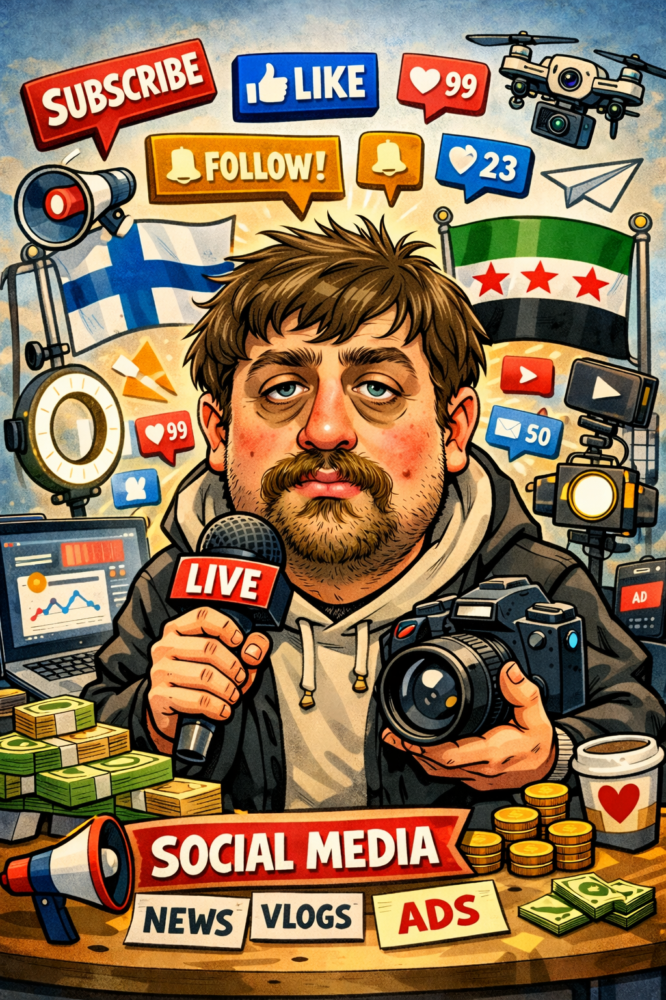

Mielenosoitukset Suomessa
Visuaalinen dokumentointi Suomessa järjestetyistä mielenosoituksista ja yhteiskunnallisista tapahtumista — hetkien, äänien ja julkisten tapaamisten energian tallentaminen.
Freelance visuaalinen journalisti ja aktiivinen sosiaalisen median viestinnän ammattilainen Suomessa.

Olen Suomessa asuva syyrialainen visuaalinen journalisti ja sosiaalisen median viestinnän ammattilainen, joka on asunut lähes vuosikymmenen Pohjoismaissa. Työni keskittyy yhteisöihin, ajankohtaisiin tapahtumiin ja visuaaliseen tarinankerrontaan.
Seuraan ja dokumentoin aktiivisesti yhteiskunnallisia liikkeitä, kulttuuritapahtumia ja ihmisten elämää sekä suomalaisessa että syyrialaisessa yhteisössä. Työni takana on uteliaisuus, sitoutuminen ihmisoikeuksiin ja vakaumus siitä, että tarinoita pitää näyttää — ei vain kertoa.
Käytän tekoälytyökaluja tutkimuksen, ideoiden luonnin ja sisällöntuotannon tehostamiseen — aina autenttisten, ihmiskeskeisten tarinoiden palveluksessa.
Aktiivinen sosiaalisen median käyttö, sisällöntuotanto ja yhteisöjen tavoittaminen eri alustoilla.
Tapahtumien, yhteiskunnallisten ilmiöiden ja ihmisten visuaalinen dokumentointi valokuvalla ja videolla.
Ajankohtaisten uutisten ja yhteiskunnallisten kehitysten aktiivinen seuranta ja analysointi.
Tekoälytyökalujen käyttö tutkimuksen, ideoiden luonnin ja sisällöntuotannon viritysten tehostamiseen.
Yhteydenpito ja viestintä suomalaisissa ja syyrialaisissa yhteisöissä yhteisistä aiheista.
Visuaalinen dokumentointi Suomessa järjestetyistä mielenosoituksista ja yhteiskunnallisista tapahtumista — hetkien, äänien ja julkisten tapaamisten energian tallentaminen.
Aktiivinen osallistuminen ja viestintä Suomessa toimivan syyrialaisen yhteisön parissa — kulttuurin, tarinojen ja jaettujen kokemusten dokumentointi.
Henkilökohtainen yhteys kotikaupunkiin Jablahiin — sen ihmisten, tapahtumien ja yhteisön dokumentointi paikallisen näkökulman kautta.
Kaksi näkökulmaa. Yksi tarina.
Asuminen, työskentely ja yhteiskunnallisten liikkeiden sekä yhteisöelämän dokumentointi suomalaisessa yhteiskunnassa.
Yhteydenpito juuriini — tapahtumien, tarinoiden ja syyrialaisten yhteisöjen kestävyyden seuraaminen.
Erilaisten yhteisöjen ymmärtäminen. Tapahtumien seuraaminen niiden tapahtuessa. Ihmisten tarinoiden dokumentointi visuaalisella autenttisuudella ja yhteiskunnallisella tietoisuudella.
Visuaalinen journalismi, tapahtumien kattaus ja sosiaalinen sisältö uutismedian toimistoille.
Yhteisöviestintä ja kampanjasisältö voittoa tavoittelemattomille organisaatioille.
Sosiaalisen median viestintä ja visuaalinen tarinankerronta yrityksille ja brändeille.
Ihmiskeskeinen visuaalinen viestintä ja ajankohtaisia aiheita koskeva sisältö institutioneille.
Tee yhteistyötä kanssani — Visuaalinen journalismi, sosiaalinen media ja yhteisöviestintä.
Ota yhteyttä